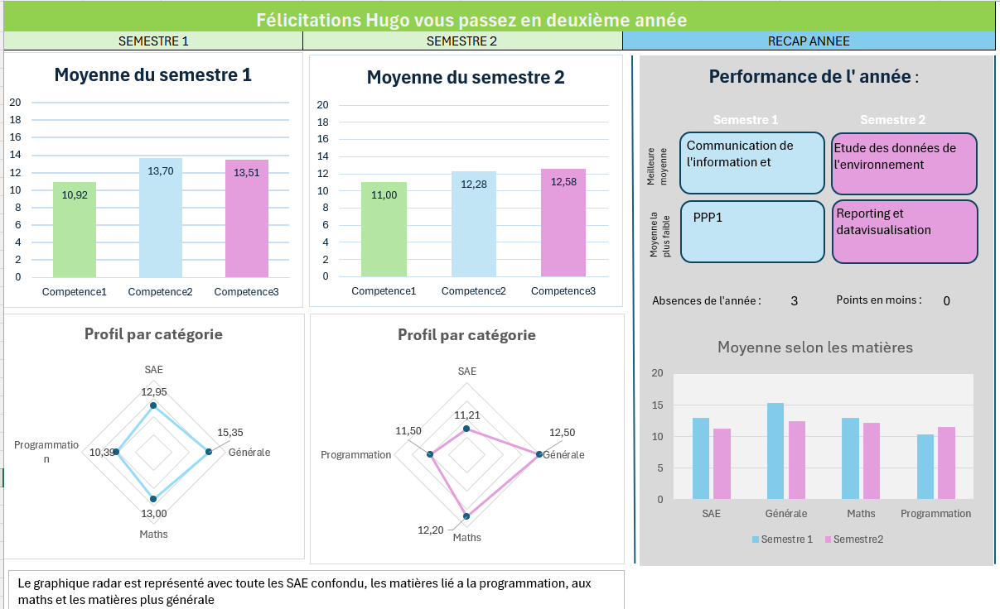
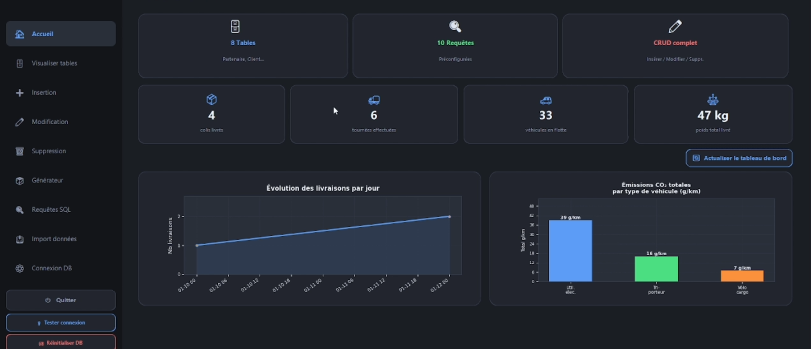
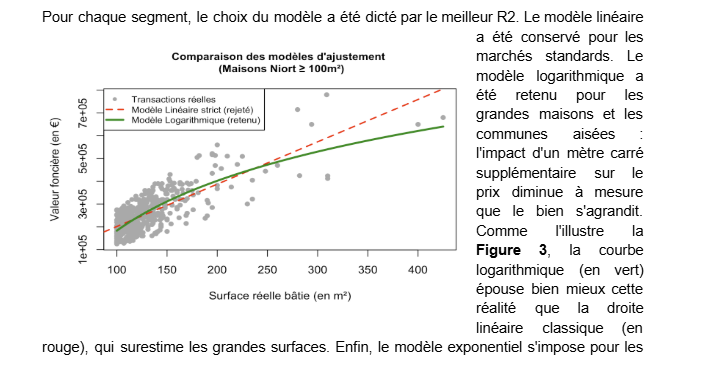
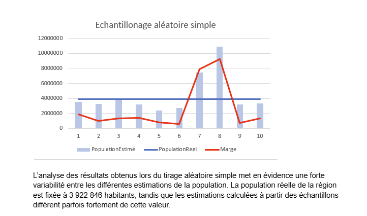
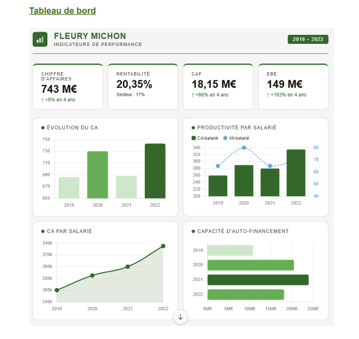
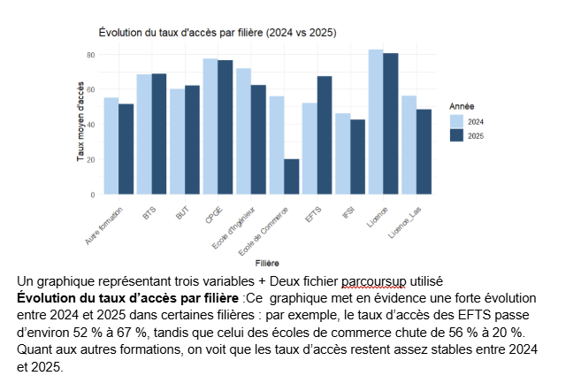
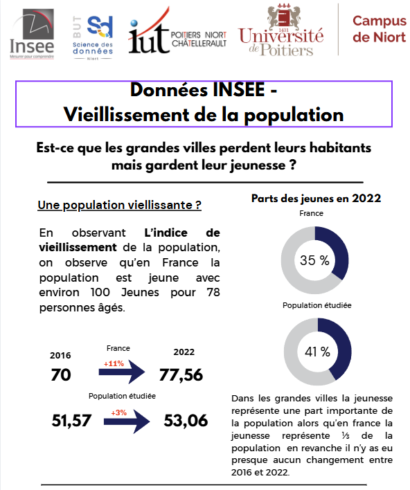
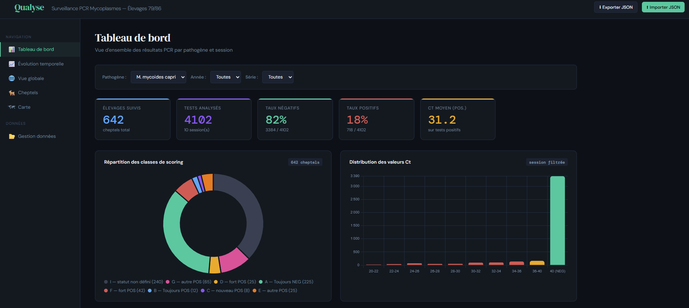

Projet

Titre du projet
Résumé du projet
Bilan du projet
Compétences acquises
Visuels du projet
🖼️Visuel 1
🖼️Visuel 2
Étudiant Data · Statistiques & Science des Données
Bienvenue sur mon portfolio 👋 Je suis étudiant en 1ʳᵉ année de BUT Science des Données à l'IUT de Niort. J'apprends à transformer des données brutes en analyses utiles et compréhensibles.
Cette première année de BUT Science des Données a confirmé mon appétence pour la donnée et l'analyse. Venant d'un cursus comptable, j'ai dû m'adapter rapidement à un environnement plus technique — et c'est précisément ce défi qui m'a le plus motivé. Je repars avec une base solide, une vraie curiosité pour l'analyse de la données et la conviction que la data est le domaine dans lequel je veux évoluer professionnellement.
Qui suis-je ?
Étudiant en BUT Science des Données, je combine rigueur analytique et curiosité technique.
2025 – aujourd'hui
BUT Science des Données
IUT de Niort · Spécialisation EMS (2ᵉ année)
Formation pluridisciplinaire en statistiques, informatique et communication des données.
2024 – 2025
BTS Comptabilité et Gestion
ISFAC — La Rochelle
Tenu et suivi des comptes, analyse et traitement des données comptables.
2021 – 2024
Baccalauréat Général — Mention Assez Bien
Lycée Paul Guérin — Niort
Spécialités : Mathématiques, Anglais Monde contemporain.
2024 – 2025
Alternance — Cabinet d'expertise comptable
Équilibre Expertise et Conseil — La Rochelle
Tenue comptable et gestion des opérations courantes, préparation des déclarations fiscales et sociales.
Juillet 2024 – Août 2024
Job d'été en restauration rapide
Travail en équipe, rapidité, gestion du stress
Travaux universitaires
Projets réalisés durant ma formation BUT Science des Données. Cliquez sur un projet pour en savoir plus.

👁 Cliquer pour voir le détail

👁 Cliquer pour voir le détail

👁 Cliquer pour voir le détail

👁 Cliquer pour voir le détail

👁 Cliquer pour voir le détail

👁 Cliquer pour voir le détail

👁 Cliquer pour voir le détail

👁 Cliquer pour voir le détail
Ce que je sais faire
Un aperçu honnête de mes niveaux actuels — en constante progression.
Qualités personnelles
Mon curriculum vitae
Consultez et téléchargez mon CV directement depuis cette page.
Me joindre
Ouvert aux opportunités de stage, alternance ou simples échanges autour de la data.
Le formulaire ouvre votre client mail par défaut.